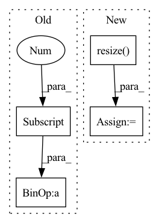

Pattern ID :5900
Before Change
// Determine the LMDB database file size according to the image size
image = cv2.imread(os.path.abspath(f"{args.image_dir}/{image_file_names[0]}"))
image_lmdb_map_size = image.shape[0] * image.shape[1] * image.shape[2] * total_image_number * 1.5
// Open LMDB write environment
lmdb_env = lmdb.open(args.lmdb_path, map_size=int(image_lmdb_map_size))After Change
image = cv2.cvtColor(image, cv2.COLOR_BGR2RGB)
// Process HR to LR image
image = cv2.resize( image, [image.shape[0] // args.upscale_factor, image.shape[1] // args.upscale_factor], interpolation=cv2.INTER_CUBIC)
image = cv2.resize(image, [image.shape[0], image.shape[1]], interpolation=cv2.INTER_CUBIC)
// Label from int to ascii
image_key_bytes = str(total_sub_image_number).encode("ascii")In pattern: SUPERPATTERN
Frequency: 3
Non-data size: 4
Instances Fragment ID: 20796173
Project Name: lornatang/srcnn-pytorch
Commit Name: 40df3f5f937456d3d90be6e1d6c64411a456bf6b
Time: 2021-11-17
Author: liuchangyu1111@gmail.com
File Name: scripts/create_lmdb_dataset.py
M Class Name: AnonimousClass
N Class Name: AnonimousClass
M Method Name: main(1)
N Method Name: main(1)
M Parent Class:
N Parent Class:
M File Name: scripts/create_lmdb_dataset.py
N File Name: scripts/create_lmdb_dataset.py
M Start Line: 30
M End Line: 44
N Start Line: 30
N End Line: 55
Before Change
// size of cropped image
crop_shape = [br[1] - ul[1], br[0] - ul[0]]
new_shape = [br[1] - ul[1], br[0] - ul[0]]
if len(img.shape) > 2:
new_shape += [img.shape[2]]
new_img = np.zeros(orig_shape, dtype=np.uint8)After Change
old_x = max(0, ul[0]), min(orig_shape[1], br[0])
old_y = max(0, ul[1]), min(orig_shape[0], br[1])
img = np.array(Image.fromarray(img.astype(np.uint8)).resize( crop_shape) )
new_img[old_y[0]:old_y[1], old_x[0]:old_x[1]] = img[new_y[0]:new_y[1], new_x[0]:new_x[1]]
Fragment ID: 20796156
Project Name: yuliangxiu/icon
Commit Name: 0198e25265de836a9b0c79b017afa7fb5edcb56a
Time: 2022-02-13
Author: yuliang.xiu@tuebingen.mpg.de
File Name: lib/pymaf/utils/imutils.py
M Class Name: AnonimousClass
N Class Name: AnonimousClass
M Method Name: uncrop(4)
N Method Name: uncrop(6)
M Parent Class:
N Parent Class:
M File Name: lib/pymaf/utils/imutils.py
N File Name: lib/pymaf/utils/imutils.py
M Start Line: 239
M End Line: 262
N Start Line: 201
N End Line: 212
Before Change
self.viewer.draw_image(img)
// draw a transparent circle around target point with variable radius
// based on the difference z-direction
diff_z = abs(current_point[2]- target_point[2] )
self.viewer.draw_circle(radius=diff_z,
pos_x=target_point[0],
pos_y=target_point[1],After Change
// INTER_NEAREST, INTER_LINEAR, INTER_AREA, INTER_CUBIC, INTER_LANCZOS4
scale_x = 2
scale_y = 2
img = cv2.resize( img,
(int(scale_x*img.shape[1]),int(scale_y*img.shape[0])),
interpolation=cv2.INTER_LINEAR)
// skip if there is a viewer open
if self.viewer is None:
self.viewer = SimpleImageViewer(arr=img,
scale_x=1, Fragment ID: 20796155
Project Name: gml16/rl-medical
Commit Name: 4abcc2eeb57bced99ef1ef46d8dfdb423aa213da
Time: 2018-01-12
Author: aa16914@wensum.doc.ic.ac.uk
File Name: examples/PlaneDetection/detectPlanePlayer.py
M Class Name: MedicalPlayer
N Class Name: MedicalPlayer
M Method Name: display(2)
N Method Name: display(2)
M Parent Class: gym.Env
N Parent Class: gym.Env
M File Name: examples/PlaneDetection/detectPlanePlayer.py
N File Name: examples/PlaneDetection/detectPlanePlayer.py
M Start Line: 374
M End Line: 399
N Start Line: 380
N End Line: 400